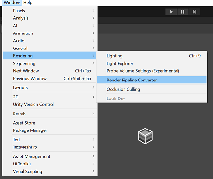
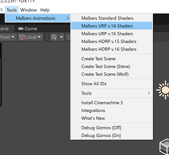
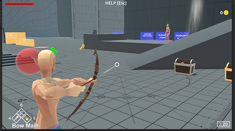

現在、UniVRMとVRMモデルのセットアップが終わっているという前提になります
続いて、商用アセットのAnimal Controllerのセットアップを行います
Animal ControllerはUnity Asset Storeで販売されているアセットで、動物のアニメーションを簡単に扱えるようにするためのアセットです
しかしながら、バージョンアップに伴い、Humanoidにも対応するようになり、元々の設計がかなり綺麗で扱いやすいということもあって今回プレイヤーコントローラーとして採用しました
Asset StoreにてAnimal Controllerの購入が終わっているという前提で進めます
Menu>Windows>Package Managerを選び、Package Managerを開きます
左上の「My Assets」を選んだあと、animal controllerを検索し、（未ダウンロードであればdownloadの後に）importを行ってください
まず、「依存するパッケージをインストールするか？」と聞かれるはずなので「Install/Upgrade」を選んでください
次にimportする内容の一覧が出たら、「Import」を選んでください
インポートが終わったら、AssetのURP化を行います
Animal ControllerのマテリアルはStandard Shaderを使用しているため、URPに対応させる必要があります
Menu>Windows>Rendering>Render Pipeline Converterを選んでください

「Material Upgrade」にチェックを入れて、Initialize And Convertを行ってください
コンバート後にいくつかエラーが出ますが、この後解消するのでここは一度閉じてください
Animal Controllerの独自シェーダーをURP対応のものに入れ替えます
まずPackage Managerから現在使用しているURPのバージョンを確認します
Unity 2022.3であれば14.x.xのはずです
次に、Menu>Tools>Malbars Animation>Malbars [対応するバージョン] Shaderaを選びます

上記の例であればMalbars URP v.14 Shadersになります
パッケージのImport画面が出たら「Import」を選んでください
これでURP対応が完了しました
Animal Controllerの動作確認を行います
まず、Animal Controllerのサンプルシーンを開いてください
再生ボタンを押して、動作確認を行ってください

マテリアルが正常に出ていて、きちんと遊べるようであれば、これでAnimal Controllerのセットアップは完了です
Animal Controllerのセットアップが完了しました
次は、VRMを使用したプレイヤーコントローラーのセットアップを行います
以上で手順書は終了です
お疲れ様でした